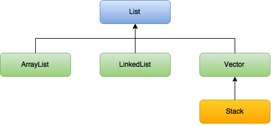
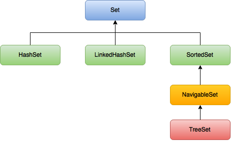

java.util 패키지
Random 클래스
|
|
Random 클래스도 내부적으로 Math.random() 메소드를 사용하고 있다.
또 Random 클래스는 seed를 지정해 동일한 난수를 반환받을 수 있다.
기본적으로 seed를 지정해주지 않으면 다음과 같은 생성자를 호출한다.
seed 값으로 현재 컴퓨터 시간을 밀리세컨드 단위로 넘겨주고 있다.
regex 패키지
정규식(Regular Expression)을 위한 패키지이다.
정규식은 Unix에서 사용했었고, Perl의 강력한 기능이었는데 요즘엔 웬만한 언어에서는 지원하는 것 같다.
|
|
Pattern은 정규식을 정의하는데 사용되고, Matcher는 정규식 패턴을 데이터와 비교하는 역할을 한다.
matcher의 매개변수로는 CharSequence 인터페이스의 구현체인 CharBuffer, String, StringBuffer가 있다.
|
|
StringTokenizer 클래스
문자열을 구분자(delimiter)를 기준으로 토큰이라는 여러 개의 문자열로 잘라내는 데 사용한다.
java.math 패키지
아래 두 클래스는 String 클래스와 마찬가지로 immutable이다.
BigInteger 클래스
int 배열을 통해 값을 다뤄서 long 보다 크지만 성능은 떨어진다.
BigDecimal 클래스
부동소수점이 정밀도에 따른 오차를 가지고 있어서 실수 연산은 정수로 변환 후 계산하는 게 더 낫다.
이 BigDecimal 클래스도 정수를 이용해서 실수를 표현해 그 오차를 줄였다.
형식화
소수점 n 번째 자리에서 반올림 하려면 곱하고 나누고 뻘짓을 하고 쿵짝쿵짝 덩기덕 쿵더러러러를 해야했다.
매우 귀찮은데 이런 것들을 형식화해서 보여주는 클래스가 형식화 클래스이며 java.text 패키지 안에 존재한다.
엑셀에서 % 붙이고 원화 붙이고 1,000처럼 보여주기 등등의 경우에 해당한다.
DecimalFormat: 십진수 형식화 클래스, 실수 정수 다 가능하다.
123456789101112131415161718class Test {public static void main(String[] args) throws ParseException {// 기존 방법double d = 1.235678;int i = (int)(d * 1000)+5;d = i / 1000.0;System.out.println(d); // 1.24// 방법 1DecimalFormat df = new DecimalFormat("#.##");System.out.println(df.format(d)); // 1.24// 방법 2Number n = df.parse(""+d);double d2 = n.doubleValue();System.out.println(d2);}}SimpleDateFormat: 날짜와 시간 관련 형식화 클래스.
12345678910class Test {public static void main(String[] args) throws ParseException {Date today = new Date();SimpleDateFormat sd = new SimpleDateFormat("yyyy-MM-dd");System.out.println(sd.format(today)); // 2017-08-05Date d = sd.parse("2017-08-05");System.out.println(d); // Sat Aug 05 00:00:00 KST 2017}}ChoiceFormat: 특정 범위에 속하는 값을 문자열로 변환해준다.
- MessageFormat: 데이터를 정해진 양식에 맞게 출력할 수 있도록 도와준다. 1234567891011121314class Test {public static void main(String[] args) throws ParseException {String msg = "Name: {0}, Age: {1}";Object[] arg = {"양간장", 25};String res = MessageFormat.format(msg, arg);System.out.println(res); // Name: 양간장, Age: 25MessageFormat mf = new MessageFormat(msg);Object[] arg2 = mf.parse(res);for(Object arg3:arg2) {System.out.println(arg3); // 양간장 25}}}
날짜와 시간
JAVA8부터는 java.time 패키지의 등장으로 인해 Date와 Calendar 클래스를 배울 필요가 없다고 생각하지만…
이미 그 클래스를 쓴 레거시 코드들이 많아서 배워야한다 ㅠㅠ
Date는 JAVA1부터 나와서 굉장히 허접해서 Calendar 클래스가 나왔고 Date 클래스도 많이 발전했다고는 한다.
필요하면 찾아서 보자~
java.time 패키지
Calendar 클래스는 immutable이 아니라 멀티 쓰레드 환경에서 안전하지 못했다.
또한 java.time이 나왔다 하더라도 레거시 코드 때문에 여전히 Date나 Calendar 클래스는 쓰일 것이다 ㅠㅠ
핵심적인 클래스는 다음과 같다.
참고로 Calendar 클래스는 ZonedDateTime과 같이 다 들고 있다.
- LocalDate(날짜)
- LocalTime(시간)
- LocalDateTime(날짜 + 시간)
- ZonedDateTime(날짜 + 시간 + Timezone)
- Instant
Date와 유사한 클래스인데 날짜와 시간을 (나노)초 단위로 표현한다.
이렇게 초단위로 표현한 걸 타임스탬프라고 부르고, 하나의 정수로 다룰 수 있어서 DB나 시간 차를 구할 때 많이 사용한다. - Period(날짜 - 날짜): 두 날짜 간의 차이를 표현
- Duration(시각 - 시각): 두 시각 간의 차이를 표현
객체 생성하기
now()와 of()라는 static 메소드를 사용하면 된다.
now는 인자 없이 그냥 호출해서 지금 시간의 정보를 구하고, of()는 매개변수를 지정해서 해당 날짜의 정보를 구한다.
Temporal 인터페이스와 TemporalAmount 인터페이스
LocalDate, LocalTime, LocalDateTime, ZonedDateTime 클래스 등은 Temporal, TemporalAccessor, TemporalAdjuster 인터페이스의 구현체이고,
Period, Duration 클래스는 TemporalAmount 인터페이스의 구현체이다.
매개변수의 다형성을 이용해 Temporal 인터페이스와 TemporalAmount 인터페이스를 매개변수의 타입으로 지정한 것들이 있는데 잘 보고 쓰면 될 것 같다.
Unix Time
1970-01-01 00:00:00 UTC로부터 현재 얼마나 시간이 흘렀는지를 초로 환산하여 정수로 표현한 것이다.
UTC는 국제 표준으로 시행되는 시간을 표현하는 기준인 것 같은데 1972년 1월 1일부터 시행되다 보니 1970년으로 퉁쳐버린 것 같다.
또한 UTC는 Coordinated Universal Time의 약자인데 CUT가 아니라 UTC가 된 이유는 영어와 프랑스어의 표기 방식 중 중립 형태를 취한 것 같다.
이는 32비트 메모리 상으로 표현했을 때 오버플로우 때문에 2,147,483,647((231 - 1) 지난 후인 2038년 1월 19일 03:14:08 UTC에 오류를 일으킨다고 한다.
64비트를 쓰면 죽기 전에는 뭐 문제 없을라나…
또한 한국은 UTC+09:00으로 9시간을 더해줘야한다는 단점이 있다. (LocalTime과 호환되지 않음)
이를 위해서는 OffsetDateTime 클래스를 이용하면 될 것 같다.
서로 다른 시간대의 지역(AWS와 한국의 클라 등등)에서 날짜 데이터를 주고 받을 때는 OffsetDateTime을 이용하면 된다.
뭐 기타 파싱이나 데이터 얻어오는 건 정리하기 귀챠니즘… 나중에 책을 다시 보던가 하자.
컬렉션(Collection)
다수의 데이터, 데이터 그룹을 컬렉션이라고 부른다.
프레임워크는 표준화된 프로그래밍 방식, 단일화된 구조(Architecture) 정도로 보면 될 것 같다.
자바에서는 이런 컬렉션 클래스들을 정리해서 프로그래머가 개발하기 편하게 만들어줬다.
핵심 인터페이스는 아래 세 가지이다.
(Map 인터페이스는 독자적이며 List와 Set은 Collection 인터페이스를 상속받은 인터페이스들이다.)
- List: 순서가 있는 데이터의 집합이며 중복을 허용한다.
구현체로는 ArrayList, LinkedList, Stack, Vector 등 - Set: 순서를 유지하지 않는 데이터의 집합, 데이터의 중복을 허용하지 않는다.
구현체로는 HashSet, TreeSet - Map: Key와 Value의 Pair(쌍)으로 이루어진 데이터의 집합니다.
순서는 유지되지 않으며, 키의 중복을 허용하지 않고 값의 중복은 허용한다.
구현체로는 HashMap, TreeMap, HashTable, Properties 등이 있다.
Vector, Stack, HashTable, Properties는 이름만 봐서는 누구를 구현한 건지 알기 힘들다.
이는 컬렉션 인터페이스가 생기기 전인 JAVA1에 생긴 것이라서 레거시 코드들과의 호환을 위해 이름을 바꾸지 않았다.
이런 녀석들보다는 다소 최근에 생긴 ArrayList나 HashMap을 사용하도록 하자~


컬렉션의 사이즈를 정할 때는 생각한 것보다 여유를 좀 줘서 생성해주는 게 좋다.
어차피 공간이 부족하면 자동적으로 늘리긴 하지만 성능 상 좋지는 않기 때문이다.
또한 ArrayList나 Vector는 배열로 값을 다스리기 때문에 공간이 부족하면
새로운 배열(더 큰 배열)을 만들고 기존의 값을 복사 후 기존의 값들과의 참조 관계를 끊어서 가비지 컬렉팅 대상이 되게 한 후 새로운 배열과 참조관계를 맺는다.
이렇게 계속해서 새로운 배열을 만들면 계속해서 메모리 공간 이곳 저곳을 차지해서 단편화가 발생하지 않을까…?
List
Vector vs ArrayList
Vector를 개선한 게 ArrayList라니까 웬만하면 ArrayList를 쓰자.
ArrayList는 검색에는 빠르나 삽입/삭제에 불리하다.(복사하고 앞뒤로 땡겨야하는 처리가 필요하기 때문)
ArrayList vs LinkedList
LinkedList는 다음 노드에 대한 참조만 바꿔주면 되므로 삽입/삭제에 용이하다.
하지만 다음 노드에 대한 참조로 순차적인 조회 밖에 불가능하므로 검색을 할 때 처음부터 순차적으로 접근해야해서 느리다.
ArrayList는 접근(읽기) 속도가 빠르고, 추가/삭제가 느리다.
순차적인 추가 삭제도 더 빠르다고 하는데 뭐 JVM이나 컴퓨터 환경에 많이 좌지우지 되는 것 같다.
LinkedList는 접근(읽기) 속도가 느리고 추가/삭제가 느리다.
그리고 데이터가 많아지면 처음부터 접근해야하는 갯수가 훨씬 늘어나므로 데이터가 많을 수록 접근성이 떨어진다.
데이터의 변경(삽입/삭제)가 잦다면 LinkedList를, 잦지 않다면 ArrayList를 쓰자.
LinkedList vs Doubly Linked List
링크드 리스트는 다음 노드에 대한 참조는 가능한데 이전 노드에 대한 참조는 불가능하다.
그래서 나온 게 이중 링크드 리스트이다.
이중 링크드 리스트는 이전/다음 노드에 대한 참조와 값으로 이루어져있다.
이중 링크드 리스트를 더 많이 쓴다고 한다.
Doubly Linked List vs Doubly Circular Linked Listed
이중 링크드 리스트는 처음부터 끝까지 갔다가 다시 끝에서 처음부터 올 수 있다.
하지만 처음 노드에서 맨 끝 노드로 가려면 순차적으로 접근해야한다는 단점이 있다.(링크드 리스트도 마찬가지다.)
이러한 문제점을 해결하기 위해 이중 원형 링크트 리스트가 나왔다.
이중 원형 링크드 리스트는 단순히 이중 링크드 리스트에서 처음 노드와 마지막 노드의 참조를 연결한 것 뿐이다.
Stack vs Queue
Stack은 후입선출(LIFO, Last In First Out), 즉 배열이 스택을 이용한 구조이다.(push와 pop의 전형적인 사용 사례)
Queue는 선입선출(FIFO, First In First Out), 데이터가 입력된 시간 순서에 따라서 처리해야하는 경우(프로세스 스케쥴링?)에 사용한다고 한다.
Stack은 전형적인 배열과 같은 자료구조를 띄므로 ArrayList와 같은 배열 리스트 기반의 클래스로 구현하기 쉽다.
하지만 Queue는 앞에 있는 놈부터 나가서 앞에 있는 놈을 땡기기 위해 새로운 배열 만들어서 복사하는 수 밖에 없다.
배열 관련 클래스로 Queue를 구현하면 이런 복사에 대한 처리 비용이 많이 들기 때문에 삽입/삭제가 잦을 때 쓰는 LinkedList를 이용하여 구현하면 된다.
Java에서 Stack은 클래스로 제공해주고 있지만, Queue는 인터페이스로만 제공해주고 있어서 그 구현체를 가져다 쓰면 된다.
위와 같이 LinkedList는 Deque(데크, Double Ended Queue)를 구현한 구현체이고,
Deque 인터페이스는 Queue 인터페이스를 상속받은 인터페이스이다.
|
|
Queue는 Queue의 인터페이스의 구현체인 LinkedList를 통해 만들 수 있고, push 대신 offer, pop 대신에 poll을 쓴다.